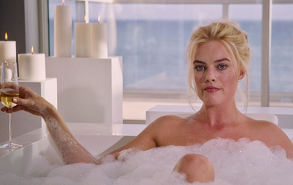

“우린 지금 미국 국민들이 망하는 데 배팅한 거야. 춤추지 마.”
항상 평범하지 않은 각본을 쓰고 스타일이 뚜렷한 연출을 하는 아담 맥케이. 시니컬한 블랙 유머와 날카로운 대사와 풍자, 화려한 캐스팅, 현란하고 빠른 편집, 비꼬는 것 같으면서도 관객의 이해가 쉽게끔 친절하게 분배된 꼼꼼한 연출이 특징.
각본과 연출을 통틀어서 특유의 테크닉이 돋보이는 미국 블랙 코미디 영화계의 거장. 현재 미국 사회가 가진 문제점과 치부를 적나라하게 드러낸다. 그는 '빅쇼트'로 제88회 아카데미 각색상을 받고 '바이스'로 제91회 아카데미 감독상, 각본상에 노미네이트 되었디.
2005년, 모두를 속인 채 돈 잔치를 벌인 은행들.
그리고 이를 정확히 꿰뚫고 월스트리트를 물 먹인 4명의 괴짜 천재들. 20조의 판돈, 세계 경제를 걸고 은행을 상대로 한 진짜 도박! 그들이 움직이기 시작했다! 월스트리트를 물 먹인 4명의 괴짜 천재들의 이야기.
<빅 쇼트>의 배경은 미국의 주택 담보대출(이하 모기지론) 시장이다. 2008년 미국 서브프라임모기지사태를 가장 잘 설명한 영화 중 하나. 초반부 영화는 모기지 시장이 어떻게 미국의 성장과 궤를 같이 했는지 알려준다.영화는 이들이 모기지 시장의 위험을 알아채고, 이를 통해 돈을 버는 과정을 설명한다. 해당 금융위기가 닥칠 거라고 예견한 실제인물들의 이야기를 들려주면서 정신없게 명확한 편집으로 2시간 동안 관객을 매료시킨다.
각본이 훌륭하고 영화속의 캐릭터 4명-캐피털 회사 대표 마이클 버리(크리스찬 베일), 펀드매니저 마크 바움(스티브 카렐), 대형은행 트레이더 자레드 베넷(라이언 고슬링), 전직 트레이더 벤 리커트(브래드 피트)-을 교차편집해서 큰 그림을 잘 설명하는 영화.
극의 주인공들은 시도 때도 없이 카메라를 쳐다보고 관객에게 말을 건넨다. 라이언 고슬링은 현재의 경제 상황에 대해 친절하게 설명해주고, 방금 장면은 현실과는 조금 달랐다고 친절하게 관객에게 말해주기까지 한다. 거품 목욕하는 마고 로비와 블랙잭을 치고 있는 셀레나 고메즈가 우리에게 경제학 용어들을 설명해준다. 거품과 도박이라는 시각적 정보를 주면서, 서브프라임 모기지와 CDO의 상황을 빗대어 시각적으로 전달한다. 극 중 도이치뱅크 펀드 매니저 역할을 했던 라이언 고슬링이 AAA부터 B등급까지 대출 신용평가등급이 새겨진 젠가를 쌓아 미국 주택담보대출 시장의 문제점을 설명하는 부분은 허술한 주담대 문제점을 단번에 이해하게 만든다. 리먼브라더스가 파산한 것은 어쩌면 예견된 일이었고, 월가와 금융시장의 오만방자함이 가장 큰 원인이었다.
우리나라 역시 2020년부터 2022년까지 이른바 부동산 ‘불장’을 겪으면서 레고랜드, 생활형 숙박시설(생숙), 지식산업센터 등 부실하고 방만한 대출 그리고 정부규제를 피해 지어진 부동산 PF들이 넘쳐난다.
“
미국경제가 무너진다에
돈을 걸었어.
”
<빅쇼트>는 미국인들이 자신들의 경제 상황에 대해 얼마나 무지했는지, 그리고 금융 위기가 발생한 후의 비극적인 상황을 생생하게 그린다. 어려운 주제를 쉽고 위트 있으면서도, 날카롭게 풀어냈다는 평이 많다. 특히, 영화는 금융 시스템의 부조리와 그로 인해 고통받는 일반 사람들의 모습을 강조하며, 무지함의 위험성을 경고한다. 영화의 결말은 금융 위기의 비극적 결과를 적나라하게 보여주며, 관객들에게 깊은 여운을 남긴다. 무지하면 죄가 되는 세상에서 어떻게 하면 무지하게 살지 않고, 어떻게 하면 속지 않고, 하다 못해 어떻게 하면 최소한 멍청하지는 않아 보일 수 있는지에 대해서 고민을 할 필요가 있다는 메시지를 영화는 희극 같은 비극의 형식을 통해 관객들에게 전달하고자 한다.